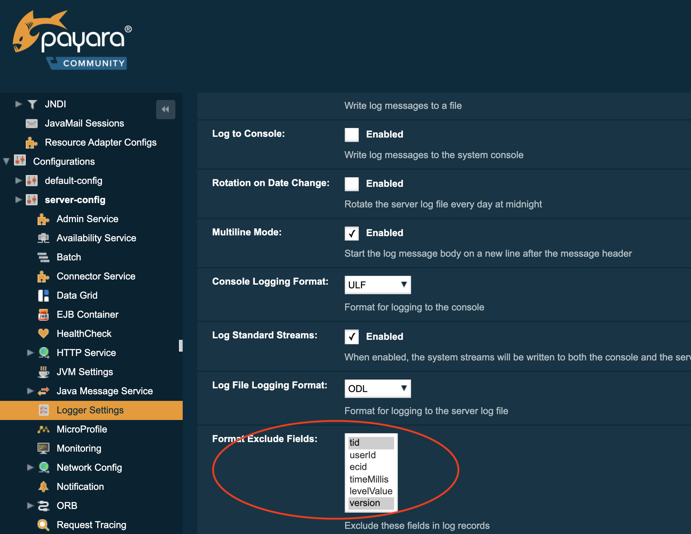

Logging
Payara Server captures information about events that occur and records this information using its logging mechanism into log files.
In a Payara Server domain, the information is logged into the following files by default:
| Instance | Log File Location |
|---|---|
Domain Admin Server (DAS) |
|
Standalone server instance |
|
Cluster instance |
|
If an instance is started using the -verbose option, it will run in the foreground and log information directly into the console.
|
Payara Server uses Java Logging (JUL) to format and output log records. The default configuration file is located at ${DOMAIN_DIR}/config/logging.properties.
Logging settings can be configured by either using the Asadmin CLI or in the Web Admin Console, like in the following screenshot:

Fast Logging
Whenever logging occurs on an application, if the LogRecord in question contains set parameters, they will undergo a forced transformation by having a toString() method call. In most cases this is the desirable outcome, but will not provide the best performance. You can enable the Fast Logging setting to skip this forced parameter transformation at runtime.
A common use case of this feature would be to prevent database access done by JPA entities, as it is a common occurrence for entity data to be logged out for auditing purposes.
| Enabling this setting can cause log entries that contain mutable parameters to be out of sync when they are resolved. Exert caution when using fast logging, as it may cause stale information to be printed out to the log. |

Log to File
The Log to File option allow you to enable and disable the action of logging to a file. When disabled this should help to minimize disk usage.
| This option will be more accommodating if Payara Server is running in cloud environment where disk space is scarce. |

Log To Console
The Log to Console option controls if the server writes the logging entries directly to the console. The property only has an effect when the server or instance is started in verbose mode.
To enable the log to console option you simply have to start the domain or instance using the verbose option:
asadmin> start-domain --verboseWhen the server or domain is not started in verbose mode, the java.util.ConsoleHandler will not be active for logging although it is defined as handler in the logging.properties file because there is no console attached with the corresponding server process.
| When in verbose mode, the log to Console option will also be active, regardless of the initial value set in the logging.properties file as otherwise, no log output would be visible on the console. |
Once the server is run in verbose mode, you can use either the Admin Console or the Asadmin CLI to modify this setting.
Multiline Mode Support
When the Multiline mode is enabled, each log entry’s message body will be printed on a new line after the message header for each log record. This will improve the overall readability of the server’s log.
Here’s a quick example of how multiline formatted log entries look like:


Environment Variable Replacement
The logging properties file supports environment variables like
.level=${ENV=logLevel}Whenever the server starts up or the logging properties are changed, the value for the .level property will be taken from the environment variable logLevel.
Access Logging Max File Size
Payara Server provides different ways to rotate HTTP access log files. This section will detail the use of the max size of the log file to trigger a rotation.
The Max File Size option provides a way to change the file size at which the PayaraServer rotates the access log file. This option accepts an integer value specifying the maximum size of the log file, after which a file rotation will occur.
If the value for this option is set to 0, log rotation will be disabled.
|

Notification Logging Service
The Notification Logging Service captures information about events which come from other services, such as the JMX Monitoring Service, the HealthCheck service or the Request Tracing service and stores these entries it into a log file.
All the generated entries are stored in server.log by default. It is possible to configure the Log Notifier to store its output in a separate log file. More information on the Log Notifier can be found on the the Log Notifier section of the Notification Service overview.
<<<<<<< HEAD
NOTE: If this setting is enabled, the default log file will be found at ${DOMAIN_DIR}/logs/notification.log/
All the generated logs are stored in server.log by default. But, it is possible to configure the Log Notifier to output to a separate log file. More information on Log Notifier can be found on the the Log Notifier. <<<<<<< HEAD >>>>>>> 7722c9e9 (Fixing broken links)
>>>>>>> 7722c9e93387852daff94f2343cb58d1504fac98
The Notification Logging Service uses its own collection of logging properties which are separate from the standard logging facilities of Payara Server. However, they are stored in the same configuration file.
Configuring the Notification Logging Service
Enabling or Disabling Logging to a File
The Log to File option will provide a way to enable and disable logging to a file of Payara Server Notifications. When disabled this should help to minimize disk usage. This option will be more accommodating if Payara Server is running in cloud environment where disk space is scarce.

Configuring Log File Rotation
By default log rotation is set to rotate when the log file reaches 2 Megabytes(MB). Nonetheless, there are number of ways log rotation can be configured. Size of file at which the log rotates can be changed, it can be set to rotate at date change, rotate when time limit is reached and, finally based on maximum number of history files.
Rotation on Date Change
The Rotation On Date Change option provides a way to set the log rotation when the system date changes (at midnight, by default).

Rotation on File Size
The File Rotation Limit option provides a way to change the file size at which the server triggers the log file rotation. This option accepts an integer value specifying the maximum size of the log file, after which a file rotation will occur. The minimum size it can be set to is 500KB (500.000 bytes).
If the value for this option is set to 0, log rotation will be disabled.
|

Rotation on Time Limit
The File Rotation Time Limit option provides a way to trigger the log file rotation based on a fixed time limit. The value of this setting is an integer that defines the time limit in minutes until the log rotation gets triggered.

Change the Logging Format
The Log File Logging Format option can be used to change the log entries' format. There are 3 logging formats available: ULF, ODL and JSON, each one represented by an specific formatter class present in the Payara Platform API.

Set the Maximum Number of Historic Files
The Maximum History Files option provides a way to set the limit on the number of log files that can be created by Payara Server. Once the number of files reaches the set limit, oldest rotated log file is deleted. If the value for this option is set 0, all the rotated log files are preserved.

Change the Name and Location of the Log File
The Log File option provides a way to change the default name and location of the server log files.

Using the Asadmin CLI
Use the following command to change the default name and location of the server log files:
asadmin> set-log-attributes fish.payara.enterprise.server.logging.PayaraNotificationFileHandler.file=${com.sun.aas.instanceRoot}/notification/testNotification.log
As seen in the sample command, you can use the ${com.sun.aas.instanceRoot} system property to reference the current domain directory location.
|

Log Rotation
File rotation keeps log files manageable, as older log files are automatically deleted after a certain amount of time, and its proper configuration is recommended to keep a healthy disk space management.
Enabling file rotation

By default a size rotation of 2MB is used for server logs, meaning no log files will be deleted until the size limit is reached and a new file is created at midnight.
Payara Server has different rotation conditions which can be fine-tuned based on your needs:
- Time
-
Daily, weekly, monthly or even hourly log rotation.
- Size
-
Logs are rotated when they exceed a certain limit.
- Number
-
Maximum number of entries kept in a log file.
These settings can be configured in the Admin Console:

Which allows you to change how the logs are rotated to your needs and can be combined with the default "daily" log rotation.
| Enabling daily log rotation and setting a limit on the number of logs to keep will keep a certain number of days of logs before the oldest log file gets deleted at midnight. |
ANSI Coloured Logging
Payara Server supports the use of ANSI coloured log entries when running in verbose mode.
To enable ANSI colours run the following command using the Asadmin CLI:
asadmin> set-log-attributes com.sun.enterprise.server.logging.UniformLogFormatter.ansiColor=true| This setting is enabled by default when a domain is started in Linux and MacOS environments. |
Log File Compression on Rotation
Payara Server can be configured to automatically compress rotated log files in an automatic manner to save disk space.
Using the Web Admin Console
When log rotation is enabled, you can turn on automatic compression in the Logger Settings section of the Admin Console, by ticking the Compress on Rotation checkbox:


JSON Log Formatter
Besides the standard Uniform Log Format (ULF) and Oracle Diagnostics Logging (ODL) formats (inherited from Payara Server’s source: GlassFish Server Open Source Edition), Payara Server provides a JSON format. With this format, every entry is formatted as a JSON object string. These entries can be easily processed by any JSON parser for further data processing.
Once the JSON formatter is enabled, the server’s log file may look similar to this sample:

Enable the JSON formatter using the Web Admin Console
To enable the JSON formatter using the Admin Console, just select JSON from the list of Logging Formats, either for Console or Log File:

Enable the JSON formatter using the Asadmin CLI
The following command will enable the JSON formatter:
asadmin> set-log-attributes com.sun.enterprise.server.logging.GFFileHandler.formatter='fish.payara.enterprise.server.logging.JSONLogFormatter'Configure Prefixed field names
In some situations, the JSON representation of a log entry may use field names that clash with existing standard field names that logging gathering tools may use them for specific purposes. To solve this problem, Payara Server can be configured to automatically prefix all field names in the JSON object representation with an underscore (_) character. See the following sample to get an idea of how such a JSON payload would look like:

The following command will enable this configuration setting:
asadmin> set-log-attributes fish.payara.deprecated.jsonlogformatter.underscoreprefix=trueSupport for Additional Fields
The JSON Log Formatter also supports the customization of additional fields through the setParameters method of the LogRecord class that is part of the standard java.util.logging package. This action is done when logging a new entry at runtime, so it is limited to an application business logic context.
Here’s a quick example of how to pass additional fields to the resulting JSON object by using a map with a single entry:
LogRecord lr = new LogRecord(Level.INFO, "Sample message");
lr.setParameters(new Object[]{Collections.singletonMap("key", "value")});
logger.log(lr);Exclude Fields
All the three log formatters ODLLogFormatter, UniformLogFormatter, and JSONLogFormatter support excluding log entry fields when being recorded. This makes the log file more compact and removes unnecessary information in the case you do not need it or want to use it.
You can change the com.sun.enterprise.server.logging.GFFileHandler.excludeFields within the <PAYARA_HOME>/glassfish/domains/<domain-name>/config/logging.properties file or use the Admin Console the Asadmin CLI.
| If the configuration is changed while the server is running, a log rotation happens so that a log file always contains the same set of information. |
Using the Admin Console
To configure the excluded fields in the log entries, select them on the Logger settings screen:

Using the Asadmin CLI
Use the following command to change the excluded fields:
asadmin> set-log-attributes com.sun.enterprise.server.logging.GFFileHandler.excludeFields=tid,version
Multiple fields must be separated by a , and no additional spaces should be included.
|
Excludable Fields
The following table lists the fields that can be excluded:
Field |
Description |
tid |
ThreadId, the thread name that generated the log entry. |
timeMillis |
The time in milliseconds since January 1st, 1970 (Unix epoch) when the log entry is generated. The human-readable version of the timestamp at the beginning of the log entry is always in the output. |
levelValue |
The numeric value corresponding to the severity level of the message. The severity level name is always present in the log entry. SEVERE = 1000, INFO = 800, FINE = 500, etc… |
version |
The Payara Server version number. |